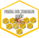

<nav class="navbar navbar-expand-lg fixed-top custom-navbar custom-bg">
    <!-- [ngClass]="{ 'navbar-dark bg-dark': nocturno, 'navbar-light bg-light': !nocturno }" -->
    <a class="navbar-brand separacion" href="/home">
         Panal del Trabajo CUVT
    </a>
    <button class="navbar-toggler" type="button" data-toggle="collapse" data-target="#navbarSupportedContent" aria-controls="navbarSupportedContent" aria-expanded="false" aria-label="Toggle navigation">
      <span class="navbar-toggler-icon"></span>
    </button>

    <div class="collapse navbar-collapse justify-content-center mr-md-5" id="navbarSupportedContent">
        <ul class="navbar-nav">
            <!-- mr-auto -->
            <li class="nav-item mr-4" routerLinkActive="active">
                <a class="nav-link p-0" [routerLink]="['home']"><span class="icon-home3 iconos-bar" tabindex="0" data-toggle="tooltip" title="Inicio"></span><b class="ml-3 habilitar-opciones">Inicio</b></a>
            </li>
            <li class="nav-item mr-4" routerLinkActive="active">
                <a class="nav-link p-0" [routerLink]="['about']"><span class="icon-profile iconos-bar" tabindex="0" data-toggle="tooltip" title="Acerca de"></span><b class="ml-3 habilitar-opciones">Acerca de</b></a>
            </li>
            <li class="nav-item mr-4" routerLinkActive="active">
                <a class="nav-link p-0" [routerLink]="['empleos']"><span class="icon-briefcase iconos-bar" tabindex="0" data-toggle="tooltip" title="Empleos"></span><b class="ml-3 habilitar-opciones">Empleos</b></a>
            </li>
            <li class="nav-item mr-4" routerLinkActive="active">
                <a class="nav-link p-0" [routerLink]="['descargas']"><span class="icon-download2 iconos-bar" tabindex="0" data-toggle="tooltip" title="Descargas"></span><b class="ml-3 habilitar-opciones">Descargas</b></a>
            </li>
            <li class="nav-item mr-4" routerLinkActive="active">
                <!-- <a class="nav-link" [routerLink]="[{outlets: {_chat: ['chat']}}]">Chat</a> -->
                <a class="nav-link p-0" [routerLink]="['fqa']"><span class="icon-question iconos-bar" tabindex="0" data-toggle="tooltip" title="Preguntas frecuentes"></span><b class="ml-3 habilitar-opciones">Preguntas frecuentes</b></a>
            </li>
            <li class="nav-item">
                <button [ngClass]="{active: dark}" class="switch mt-2" (click)="changeTheme()">
                    <span class="icon-star-full"></span>
                    <span class="icon-brightness-contrast"></span>
              </button>
            </li>
        </ul>
    </div>
    <!-- Campo de búsqueda 
    <div class="collapse navbar-collapse justify-content-end" id="navbarSupportedContent">
        <app-input-search></app-input-search>
    </div>
    -->
</nav>